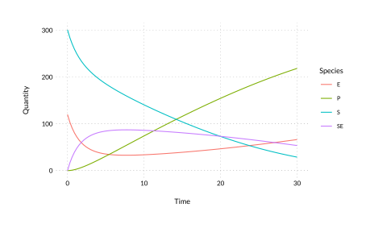
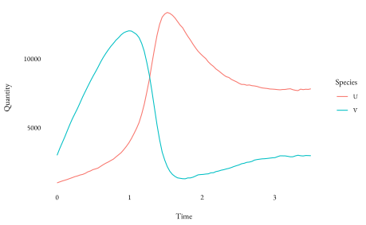

An R package for simulating reaction and reaction-diffusion systems.
Installation
You can install the development version from GitHub with:
devtools::install_github('dbarrows/rendr')
Reaction system solvers
Networks are created using the bondr package. See Creating Networks for more details.
library(rendr)
RRE
A deterministic solver that uses the Reaction Rate Equation (RRE) in conjunction with an ode solver.
# reaction network (net <- network_examples()) #> # Reaction network: 3 reactions x 4 species #> Reactants Products Rate #> R1 S + E -> SE 0.00166 #> R2 SE -> S + E 1e-04 #> R3 SE -> E + P 0.1 # initial state/conditions state <- c(301, 120, 0, 0) # simulation time T <- 30 sys <- rsys(net, state, T) (sol <- rre(sys)) #> Network #> # Reaction network: 3 reactions x 4 species #> Reactants Products Rate #> R1 S + E -> SE 0.00166 #> R2 SE -> S + E 1e-04 #> R3 SE -> E + P 0.1 #> #> Solution #> # A tibble: 100 x 5 #> Time S E SE P #> <dbl> <dbl> <dbl> <dbl> <dbl> #> 1 0 301 120 0 0 #> 2 0.303 285. 104. 16.2 0.255 #> 3 0.606 271. 90.9 29.1 0.947 #> 4 0.909 260. 80.6 39.4 1.99 #> 5 1.21 250. 72.1 47.9 3.32 #> 6 1.52 241. 65.2 54.8 4.88 #> 7 1.82 234. 59.5 60.5 6.62 #> 8 2.12 227. 54.8 65.2 8.53 #> 9 2.42 221. 50.9 69.1 10.6 #> 10 2.73 216. 47.6 72.4 12.7 #> # … with 90 more rows
A function is provided for easy visualisation of solutions.

Reaction-diffusion system solvers
Reaction-diffusion systems created via the rdsys class, which are constructed similarly to rsyss.
# reaction network net <- network("0 <-> U, 4e3, 2 0 -> V, 1.2e4 2U + V -> 3U, 12.5e-8") # simulation domain and initial conditions vol <- volume(dims = c(40, 1, 1), h = 1/40, seed = c(25, 75)) # diffusion coefficients D <- c(1e-3, 1e-1) # simulation time T <- 3.5 (sys <- rdsys(net, vol, D, T)) #> $network #> # Reaction network: 4 reactions x 2 species #> Reactants Products Rate #> R1 0 -> U 4000 #> R2 U -> 0 2 #> R3 0 -> V 12000 #> R4 2U + V -> 3U 1.25e-07 #> #> $volume #> # dims: 40 x 1 x 1 #> # h: 0.025 #> # states: #> # # A tibble: 40 x 5 #> x y z U V #> <int> <int> <int> <dbl> <dbl> #> 1 1 1 1 25 75 #> 2 2 1 1 25 75 #> 3 3 1 1 25 75 #> 4 4 1 1 25 75 #> 5 5 1 1 25 75 #> # … with 35 more rows #> #> $D #> U V #> 0.001 0.100 #> #> $T #> [1] 3.5
ISSA
Generate a single realisation of the Reaction-diffusion Master Equation (RDME) solution via the Inhomogeneous Stochastic Solution Algorithm (ISSA).
issa(sys) %T>% print() %>% plot() #> Starting ISSA simulation with parameters: #> - Reactions: 4 #> - Species: 2 #> - Dimensions: 40x1x1 #> - h: 0.025 #> - time: [0, 3.5] #> .................................................................................................... #> Network #> # Reaction network: 4 reactions x 2 species #> Reactants Products Rate #> R1 0 -> U 4000 #> R2 U -> 0 2 #> R3 0 -> V 12000 #> R4 2U + V -> 3U 1.25e-07 #> #> Solution #> # 100 time points x 2 species

NSM
Generate a single realisation of the (RDME) solution via the Next Subvolume Method (NSM). Usage of the nsm function is the same as with the ISSA solver. The NSM algorithm is usually faster for systems with a large number of subvolume (voxels) relative to the reaction network size. You may have to try both the ISSA and NSM solver to see which is faster for a given reaction-diffusion system.
system.time(issa(sys, verbose = FALSE)) #> user system elapsed #> 250.709 0.255 251.339 system.time(nsm(sys, verbose = FALSE)) #> user system elapsed #> 143.156 0.160 143.487